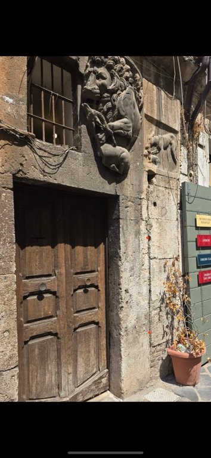
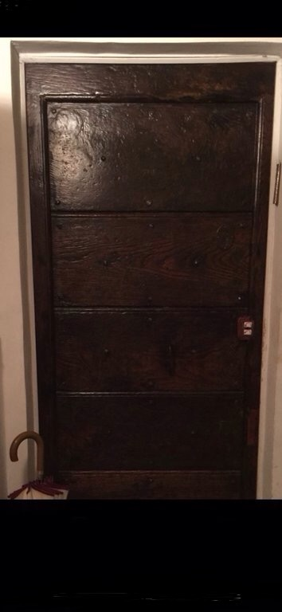

1
Open the Building Door
Use the button below to unlock the main door.
➜ Open Building Door
2
Arrive at the Third Floor
Go up to the 3rd floor.
3
This is Your Apartment Door
Please press the button only once.
➜ Open Apartment Door
Need help?
Call or WhatsApp: +39 335 524 5756